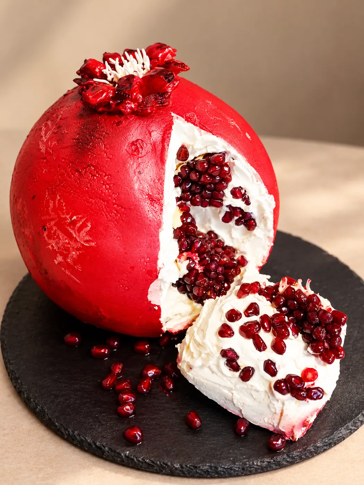
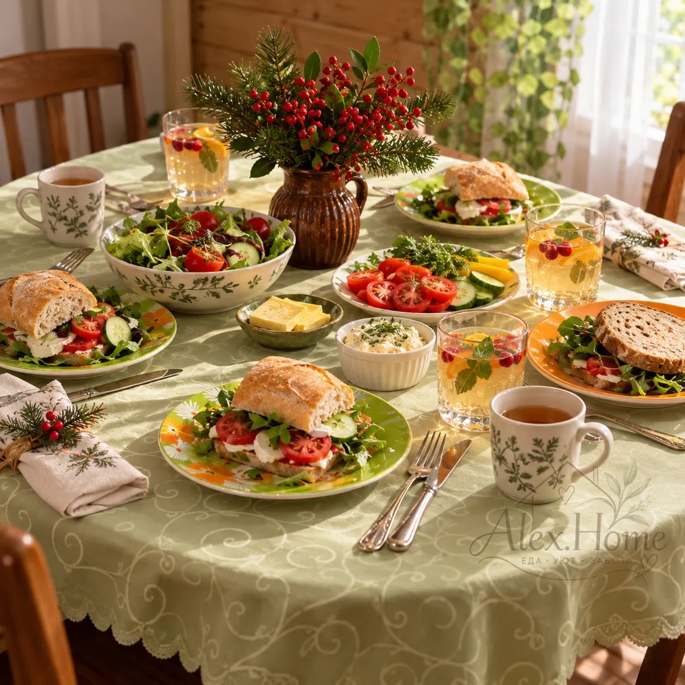

01 /
Домашняя кухня
Обеды, ужины, домашняя выпечка и приготовление еды на несколько дней.
Обсудить →Домашняя еда, красивые десерты и забота о вашем доме. Чтобы в повседневной жизни оставалось больше места для радости.

Alex.Home / портфолиоОт вкусного ужина до праздничного торта и порядка в доме. Услуги и условия согласовываются индивидуально.
Обеды, ужины, домашняя выпечка и приготовление еды на несколько дней.
Обсудить →Праздничные и тематические торты, сладкие подарки и десерты по случаю.
Посмотреть работы →Поддерживающая уборка, порядок и повседневная помощь по дому.
Обсудить →Обсудим ваши пожелания и подберём удобный формат сотрудничества.
Связаться →Два отдельных направления портфолио: авторские торты и домашние праздничные блюда. Каждая работа — с вниманием к деталям.
Тематические торты, праздничная выпечка и десерты.

Мы верим, что уют складывается из простых вещей: вкусной еды, чистоты, красивой сервировки и внимания к людям.
Alex.Home — камерный проект домашней кухни и заботы о быте, где на первом месте живое общение и индивидуальный подход.
Расскажите о вашей задаче ↗Что нужно приготовить, испечь или сделать по дому?
Обсудим объём, сроки, пожелания и стоимость.
Согласуем удобные условия и приступим к делу.
Расскажите, какая помощь вам нужна. Пока мы принимаем обращения через объявление на Авито — ссылка появится здесь после публикации.